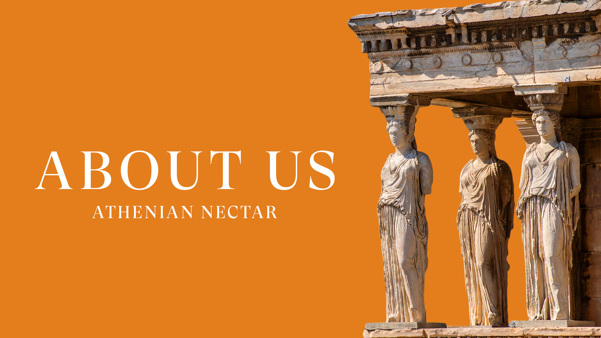

Welcome to Athenian Nectar – Savor the Elixir of Athenian Delights
At Athenian Nectar, we believe that the vibrant city of Athens is not just a destination; it’s a gastronomic journey waiting to be explored. Nestled in the cradle of ancient history and modern charm, Athenian Nectar is your ultimate guide to the rich tapestry of flavors that Athens has to offer.
Our Story:
Athenian Nectar is born out of a deep passion for the intersection of culture, history, and the culinary arts. As avid food enthusiasts, we embarked on a quest to uncover the hidden gems, traditional delights, and contemporary innovations that make Athens a food lover’s paradise.
Our Mission:
At Athenian Nectar, our mission is to celebrate the culinary heritage of Athens and connect food lovers from around the world to the heart and soul of Greek gastronomy. We aim to foster a global community of food enthusiasts who share our passion for authentic flavors, cultural exploration, and the joy that comes from sharing a delicious meal with loved ones.
Join Us on this Culinary Odyssey:
Embark on a journey of taste and discovery with Athenian Nectar. Whether you’re a local seeking fresh culinary inspiration or a traveler eager to explore Athens through its gastronomic delights, our blog is your passport to a world of flavors, aromas, and stories waiting to be savored.
Indulge your senses, ignite your curiosity, and join us as we navigate the gastronomic wonders of Athens – where every bite tells a tale and every sip is a celebration. Welcome to Athenian Nectar, where the journey is as delectable as the destination. Cheers to the art of savoring life!
Meet Our Team

Maria Papadopoulou

Nikos Dimitriou